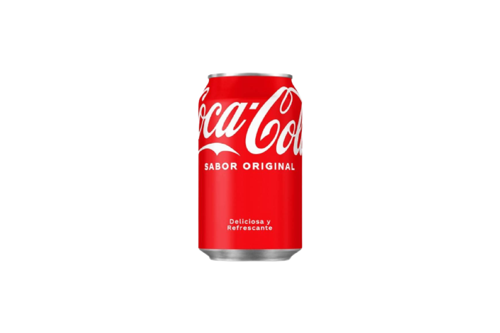
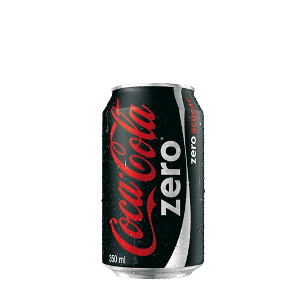
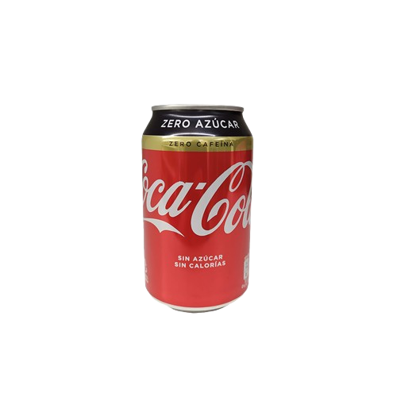
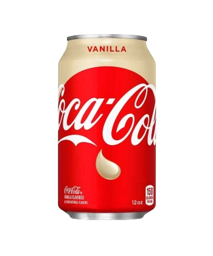
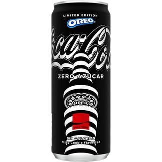

Como muchas personas que han cambiado la historia, John Pemberton, un farmacéutico de Atlanta, se vio movido por la curiosidad. Una tarde, agitó un aromático líquido de color caramelo y, cuando terminó, lo llevó hasta la cercana Jacobs' Pharmacy. Allí la mezcla fue combinada con agua carbonatada y ofrecida a los clientes, que coincidieron en que la nueva bebida era algo especial. Así que Jacobs' Pharmacy la puso a la venta por cinco centavos de dólar el vaso. |
|
Un año después hace su aparición el que se convertiría durante un tiempo en un rostro habitual de la publicidad de Coca‑Cola, un duende con cara de pícaro, el llamado Sprite Boy. Y lo hace en un anuncio cuyo mensaje es que “Coca‑Cola” y “Coke” son dos términos que hacen referencia al mismo producto. |
|
En 1899, Asa Griggs Candler, un empresario de Atlanta, se convirtió en el dueño de la fórmula secreta de Coca-Cola. En 1915, la botella de Coca-Cola se convirtió en un icono de la marca. La botella de Coca-Cola se ha convertido en un símbolo de la empresa y su historia. |
|
Coca-Cola |
 |
Coca-Cola Zero |  |
Coca-Cola Sin Cafeina |
 |
Coca-Cola Vanilla |
 |
Coca-Cola Oreo |
 |
Coca-Cola Cherry |
 |